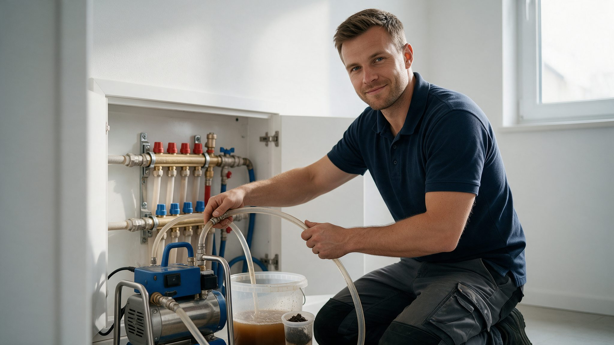

Technik instalacji grzewczych (k/m)
Czyścimy podłogówki w domach. Ty podpinasz maszynę do rozdzielacza, płuczesz każdą pętlę osobno i oddajesz klientowi dom, który znowu grzeje. Konkretna robota, stała pensja i premie.
- 8–12 tys. zł brutto
- Aplikacja bez CV
- Pon.–pt., weekendy wolne
- Konin + 100 km

Stała pensja i premie za wyniki.
Nie płacimy od sztuki i nie każemy Ci szukać klientów. Pensję dostajesz co miesiąc, a premie za dobrą robotę dokładamy na wierzch.
Za co dostajesz premie
- Za czyszczenia ponad plan. Im więcej domów zrobisz w miesiącu, tym więcej zarabiasz.
- Za zadowolonych klientów. Opinie 5 gwiazdek i polecenia od klientów są dla nas warte pieniądze, więc dzielimy się nimi z Tobą.
- Za sprzedaż dodatkową. Gdy widzisz, że klientowi przyda się np. filtr magnetyczny albo serwis kotła lub pompy ciepła, dostajesz premię od zlecenia.
Dokładne stawki premii przekażemy Ci przed rozmową. Ile wyjdzie „na rękę”, zależy od formy współpracy i Twoich ulg podatkowych, policzymy to razem.
Tak wygląda zwykła wizyta u klienta
Jedna instalacja to zwykle 4–7 godzin. Papierologię robią za Ciebie nasze automaty.
Plan dnia w telefonie
Znasz adres, metraż, liczbę pętli i źródło ciepła. Termin z klientem dzień wcześniej potwierdza nasz zespół, więc nie musisz do nikogo dzwonić.
Maszyna do rozdzielacza
Płuczesz chemią każdą pętlę osobno, a potem grzejniki po kolei. Sprzęt, chemię i inhibitor masz od nas.
Klient widzi efekt
Pokazujesz, co wyleciało z rur, zalewasz instalację wodą z inhibitorem i odpowietrzasz. Klient podpisuje protokół w telefonie.
Głosówka i jedziesz dalej
Nagrywasz krótkie podsumowanie. Automat zrobi z niego protokół i wyśle klientowi ankietę, a Ty jedziesz do drugiego domu albo do siebie.
Dobra robota, za którą ktoś wreszcie dobrze płaci
Klienci czekają w kolejce
Reklamy codziennie przynoszą nowe zgłoszenia, a opiekunowie klienta umawiają terminy. Ty nie szukasz zleceń, tylko je robisz.
Pensja, a nie stawka za sztukę
Pensja co miesiąc, a premie są dodatkiem, nie zamiast pensji. Razem 8–12 tys. zł brutto.
Sprzęt i chemia po naszej stronie
Maszyna do płukania, chemia i inhibitor. Ty przyjeżdżasz i robisz robotę porządnie.
Weekendy i święta wolne
Wizyty umawiamy od poniedziałku do piątku. Soboty, niedziele i święta masz dla siebie.
Fach, który będzie potrzebny
Co roku przybywa domów z podłogówką, a większość z nich nigdy nie była płukana. Roboty będzie coraz więcej.
Rośniemy, więc jest gdzie awansować
Otwieramy kolejne bazy w Polsce. Najlepsi technicy będą szkolić nowe osoby i prowadzić własne ekipy.
Nie musisz wszystkiego umieć. Ważne, żeby Ci zależało.
Pasujesz do nas, jeśli
- Masz prawo jazdy kat. B. Dojeżdżasz do klientów w promieniu ok. 100 km od Konina.
- Lubisz robotę rękami i zostawiasz po sobie porządek.
- Dbasz o punktualność i umiesz spokojnie porozmawiać z klientem w jego domu.
- Znasz podstawy hydrauliki albo instalacji grzewczych. To pomaga, ale czyszczenia i tak nauczymy Cię na miejscu.
Co dostajesz
- 8–12 tys. zł brutto miesięcznie razem z premiami za wyniki.
- Klientów z kalendarza. Terminy umawiają i potwierdzają opiekunowie klienta.
- Sprzęt, chemię i inhibitor.
- Wdrożenie na start: pierwsze czyszczenia robisz razem z naszym technikiem.
Najczęstsze pytania
Czy muszę mieć doświadczenie?
Nie musisz. Pomaga doświadczenie z hydrauliką, instalacjami albo serwisem, ale samego czyszczenia nauczymy Cię na miejscu, przy prawdziwych instalacjach.
Gdzie będę pracować?
W domach klientów w Koninie i okolicach do ok. 100 km, m.in. w Kole, Turku, Słupcy, Wrześni, Gnieźnie, Kaliszu, Inowrocławiu i Włocławku. Gdy otworzymy kolejne bazy, możesz pracować bliżej swojego miejsca zamieszkania.
W jakich godzinach?
Od poniedziałku do piątku. Wizyty są w dwóch oknach: rano 8–13 i po południu 14–19. Weekendy i święta są wolne.
Ile zarobię na rękę?
8–12 tys. zł brutto miesięcznie, razem z premiami. Kwota „na rękę” zależy od formy współpracy i Twoich ulg podatkowych, więc policzymy ją razem na rozmowie.
Jak wygląda rekrutacja?
- Wypełniasz formularz poniżej. To 2 minuty i nie potrzebujesz CV.
- Oddzwaniamy, zwykle w ciągu 2 dni roboczych.
- Spotykamy się i pokazujemy Ci, jak wygląda czyszczenie w praktyce.
Aplikuj w 2 minuty
Bez CV i listu motywacyjnego. Zostaw kontakt i kilka słów o sobie, a my oddzwonimy.
- 1Wypełniasz formularz
- 2Oddzwaniamy w ciągu 2 dni roboczych
- 3Spotkanie i pokaz czyszczenia
Oddzwonimy, zwykle w ciągu 2 dni roboczych. Miej telefon pod ręką.